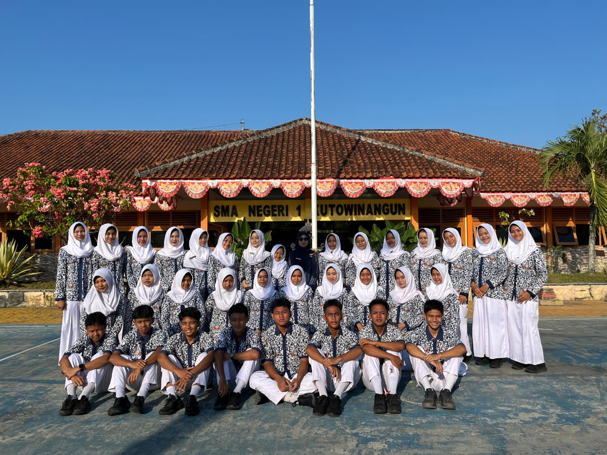
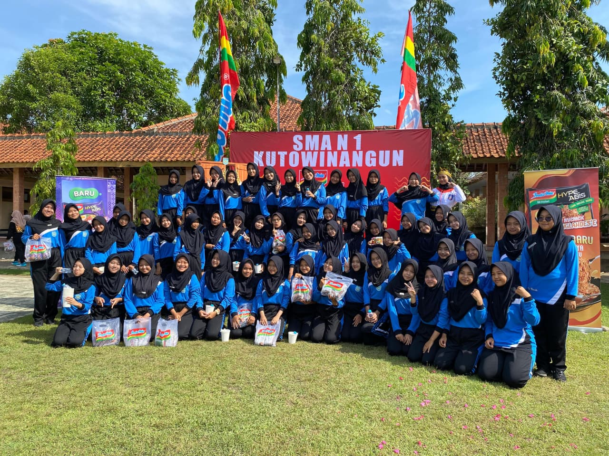
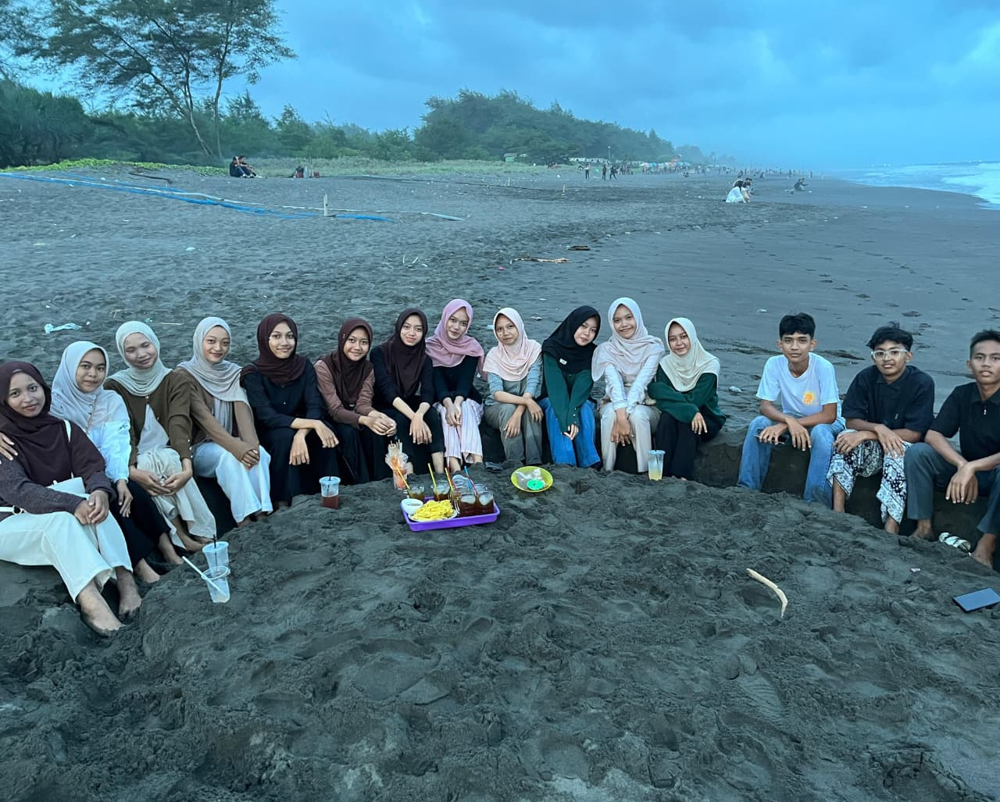

Membangun Generasi Cerdas & Berkarakter
Selamat datang di website resmi SMA Negeri 1 KUTOWINANGUN. Kami berkomitmen untuk memberikan pendidikan terbaik bagi masa depan bangsa.
Selamat datang di website resmi SMA Negeri 1 KUTOWINANGUN. Kami berkomitmen untuk memberikan pendidikan terbaik bagi masa depan bangsa.

Didirikan pada tahun 1984, SMANSAKU telah menjadi institusi pendidikan terdepan di wilayah ini. Kami mengutamakan pendidikan karakter yang dipadukan dengan kemajuan teknologi.
Beberapa Acara Kreatif dan Penuh Vibes Positif dari siswa-siswi kami.
2026

Kegiatan Tahunan (2026)

Pagelaran seni (2026)


